library(tidyverse)
library(ggthemes)
library(dplyr)
library(ggmap)
library(maps)
library(caret)
library(class)
library(ggplot2)
library(grid)
library(gridExtra)
library(tidyr)
library(usmap)
library(highcharter)
library(broom)
library(tidyverse)
library(plotly)
library(e1071)
library(RColorBrewer)breweries = read.csv(file.choose(), header = TRUE)
head(breweries, n = 5)## Brew_ID Name City State
## 1 1 NorthGate Brewing Minneapolis MN
## 2 2 Against the Grain Brewery Louisville KY
## 3 3 Jack's Abby Craft Lagers Framingham MA
## 4 4 Mike Hess Brewing Company San Diego CA
## 5 5 Fort Point Beer Company San Francisco CAbeers = read.csv(file.choose(), header = TRUE)
head(beers, n = 5)## Name Beer_ID ABV IBU Brewery_id Style Ounces
## 1 Pub Beer 1436 0.050 NA 409 American Pale Lager 12
## 2 Devil's Cup 2265 0.066 NA 178 American Pale Ale (APA) 12
## 3 Rise of the Phoenix 2264 0.071 NA 178 American IPA 12
## 4 Sinister 2263 0.090 NA 178 American Double / Imperial IPA 12
## 5 Sex and Candy 2262 0.075 NA 178 American IPA 12#1. How many breweries are present in each state?
# check structure of breweries df
# str(breweries)
## edit the State column to remove the blank space
## also convert to factor
breweries$State = as.factor(substr(breweries$State, 2, 3))
st_reg <- data.frame(State=state.abb, Region=state.region)
st_reg <- rbind(st_reg, data.frame(State="DC", Region="Northeast"))
breweries <- left_join(breweries,st_reg)## Joining, by = "State"## confirm all rows have a Region
# breweries %>% filter(is.na(Region) == TRUE)
# Plot breweries by state & region
breweries %>% ggplot(aes(x=State, fill = State)) +
geom_histogram(stat="count") +
labs(title="Count of breweries per state sorted by region") +
theme(legend.position="none", axis.text.x=element_text(angle=45,hjust=0.8)) +
facet_wrap(~Region, scale="free")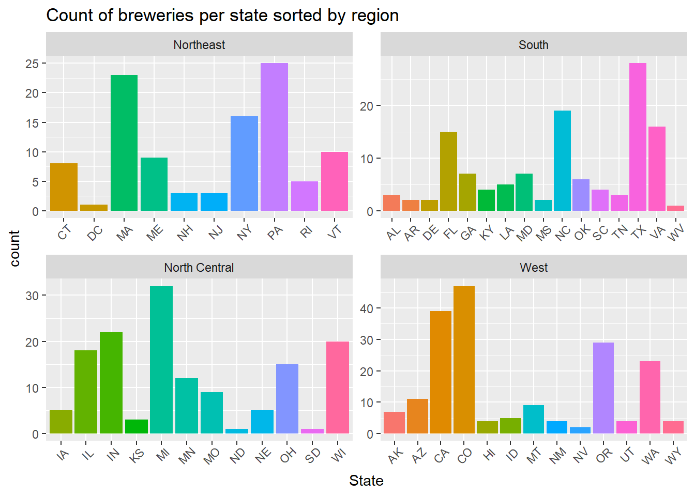 The above graph shows the number of breweries per state (broken down by region for more compact viewing).
# Breweries by state
# BreweriesByState = data.frame(table(breweries$State))
# colnames(BreweriesByState) = c("State","Breweries")
# BreweriesByState
# Breweries by state with region
BreweriesByStateRegion = data.frame(table(breweries$State, breweries$Region))
colnames(BreweriesByStateRegion) = c("State","Region","Breweries")
BreweriesByStateRegion %>% filter(Breweries > 0)## State Region Breweries
## 1 CT Northeast 8
## 2 DC Northeast 1
## 3 MA Northeast 23
## 4 ME Northeast 9
## 5 NH Northeast 3
## 6 NJ Northeast 3
## 7 NY Northeast 16
## 8 PA Northeast 25
## 9 RI Northeast 5
## 10 VT Northeast 10
## 11 AL South 3
## 12 AR South 2
## 13 DE South 2
## 14 FL South 15
## 15 GA South 7
## 16 KY South 4
## 17 LA South 5
## 18 MD South 7
## 19 MS South 2
## 20 NC South 19
## 21 OK South 6
## 22 SC South 4
## 23 TN South 3
## 24 TX South 28
## 25 VA South 16
## 26 WV South 1
## 27 IA North Central 5
## 28 IL North Central 18
## 29 IN North Central 22
## 30 KS North Central 3
## 31 MI North Central 32
## 32 MN North Central 12
## 33 MO North Central 9
## 34 ND North Central 1
## 35 NE North Central 5
## 36 OH North Central 15
## 37 SD North Central 1
## 38 WI North Central 20
## 39 AK West 7
## 40 AZ West 11
## 41 CA West 39
## 42 CO West 47
## 43 HI West 4
## 44 ID West 5
## 45 MT West 9
## 46 NM West 4
## 47 NV West 2
## 48 OR West 29
## 49 UT West 4
## 50 WA West 23
## 51 WY West 4# rename Brew_ID to match column name in beers (for merge)
breweries = breweries %>% rename(Brewery_id = Brew_ID)
head(breweries, n = 5)## Brewery_id Name City State Region
## 1 1 NorthGate Brewing Minneapolis MN North Central
## 2 2 Against the Grain Brewery Louisville KY South
## 3 3 Jack's Abby Craft Lagers Framingham MA Northeast
## 4 4 Mike Hess Brewing Company San Diego CA West
## 5 5 Fort Point Beer Company San Francisco CA West# merge the data
dfBrews = merge(breweries, beers, by = c("Brewery_id"), all = FALSE)
head(dfBrews, n = 6)## Brewery_id Name.x City State Region Name.y Beer_ID ABV IBU Style Ounces
## 1 1 NorthGate Brewing Minneapolis MN North Central Pumpion 2689 0.060 38 Pumpkin Ale 16
## 2 1 NorthGate Brewing Minneapolis MN North Central Stronghold 2688 0.060 25 American Porter 16
## 3 1 NorthGate Brewing Minneapolis MN North Central Parapet ESB 2687 0.056 47 Extra Special / Strong Bitter (ESB) 16
## 4 1 NorthGate Brewing Minneapolis MN North Central Get Together 2692 0.045 50 American IPA 16
## 5 1 NorthGate Brewing Minneapolis MN North Central Maggie's Leap 2691 0.049 26 Milk / Sweet Stout 16
## 6 1 NorthGate Brewing Minneapolis MN North Central Wall's End 2690 0.048 19 English Brown Ale 16tail(dfBrews, n = 6)## Brewery_id Name.x City State Region Name.y Beer_ID ABV IBU Style Ounces
## 2405 556 Ukiah Brewing Company Ukiah CA West Pilsner Ukiah 98 0.055 NA German Pilsener 12
## 2406 557 Butternuts Beer and Ale Garrattsville NY Northeast Porkslap Pale Ale 49 0.043 NA American Pale Ale (APA) 12
## 2407 557 Butternuts Beer and Ale Garrattsville NY Northeast Snapperhead IPA 51 0.068 NA American IPA 12
## 2408 557 Butternuts Beer and Ale Garrattsville NY Northeast Moo Thunder Stout 50 0.049 NA Milk / Sweet Stout 12
## 2409 557 Butternuts Beer and Ale Garrattsville NY Northeast Heinnieweisse Weissebier 52 0.049 NA Hefeweizen 12
## 2410 558 Sleeping Lady Brewing Company Anchorage AK West Urban Wilderness Pale Ale 30 0.049 NA English Pale Ale 12# rename columns in merged data
colnames(dfBrews) = c("Brewery_ID","Brewery_Name","City","State","Region","Beer_Name",
"Beer_ID","ABV","IBU","Style","Ounces")Heat map of breweries by state
# create new df to play with for heat map
dfBrews2 = dfBrews
dfBrews2$StateName = state.name[match(dfBrews$State, state.abb)]
# head(dfBrews2, n = 5)
# count up the occurance of each state.
BrewMapData = count(dfBrews2, StateName)
# head(BrewMapData, n = 5)
colnames(BrewMapData)[2] = "breweries" # change "n" to "breweries"
# make new column region with lowercase state name
BrewMapData$region <- tolower(BrewMapData$StateName)
# drop the StateName column (first column)
BrewMapData2 = BrewMapData[-1]
# head(BrewMapData2, n = 5)
# get the state info
states = map_data("state")
# head(states, n = 5)
# merge the state info and the brew data
map.df <- merge(states,BrewMapData2, by="region", all.x=T)
# head(map.df, n = 5)
map.df <- map.df[order(map.df$order),]
# create heat map
ggplot(map.df, aes(x=long,y=lat,group=group))+
geom_polygon(aes(fill = breweries))+
geom_path()+
scale_fill_gradientn(colors = brewer.pal(9,"Blues"), na.value="grey90")+
ggtitle("Breweries by State")+
coord_map()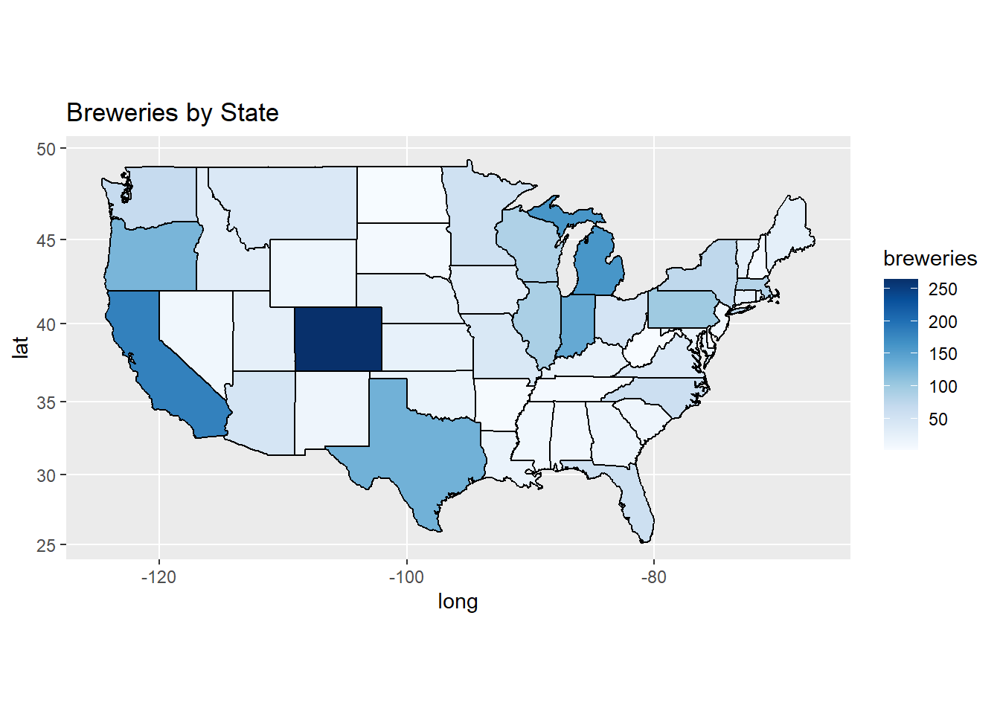
# see nulls in merged data
sapply(dfBrews,function(x) sum(is.na(x)))## Brewery_ID Brewery_Name City State Region Beer_Name Beer_ID ABV IBU Style Ounces
## 0 0 0 0 0 0 0 62 1005 0 0# show breakdown of % missing for each state
na_byState <- data.frame()
for(i in st_reg$State){
na_byState[i,1]=length(which(grepl(i,dfBrews$State)))
na_byState[i,2]=length(which(grepl(i,dfBrews$State) & is.na(dfBrews$IBU)))
}
names(na_byState) <- c("Beers_count","IBU_NAs_count")
na_byState %>% mutate(Percent_NA = round(IBU_NAs_count/Beers_count*100,digits=0))## Beers_count IBU_NAs_count Percent_NA
## AL 10 1 10
## AK 25 8 32
## AZ 47 23 49
## AR 5 4 80
## CA 183 48 26
## CO 265 119 45
## CT 27 21 78
## DE 2 1 50
## FL 58 21 36
## GA 16 9 56
## HI 27 9 33
## ID 30 13 43
## IL 91 52 57
## IN 139 48 35
## IA 30 5 17
## KS 23 4 17
## KY 21 7 33
## LA 19 9 47
## ME 27 20 74
## MD 21 11 52
## MA 82 31 38
## MI 162 124 77
## MN 55 9 16
## MS 11 0 0
## MO 42 13 31
## MT 40 17 42
## NE 25 16 64
## NV 11 3 27
## NH 8 6 75
## NJ 8 0 0
## NM 14 8 57
## NY 74 28 38
## NC 59 29 49
## ND 3 0 0
## OH 49 17 35
## OK 19 8 42
## OR 125 38 30
## PA 100 53 53
## RI 27 7 26
## SC 14 9 64
## SD 7 7 100
## TN 6 1 17
## TX 130 41 32
## UT 26 15 58
## VT 27 10 37
## VA 40 5 12
## WA 68 25 37
## WV 2 0 0
## WI 87 45 52
## WY 15 3 20
## DC 8 4 50### set seed
set.seed(7)
### impute values for ABV NAs
dfBrews$ABV = ifelse(is.na(dfBrews$ABV),
round(sample((mean(dfBrews$ABV, na.rm = TRUE) - sd(dfBrews$ABV, na.rm = TRUE)):
(mean(dfBrews$ABV, na.rm = TRUE) + sd(dfBrews$ABV, na.rm = TRUE)),
size = sum(is.na(dfBrews$ABV)), replace = T), 0), dfBrews$ABV)
# columns that have null values
colnames(dfBrews)[!complete.cases(t(dfBrews))]## [1] "IBU"### impute values for IBU using Naive Bayes
# created editable data set
combined_df <- dfBrews
# split data frame into IBU known and IBU unknown
ibu_known <- combined_df[which(!is.na(combined_df$IBU)),]
ibu_unknown <- combined_df[which(is.na(combined_df$IBU)),]
############# Visualizations ##################################
#correlation between numerical vectors - weak association
ibu_known %>% select_if(is.numeric) %>% cor() %>% corrplot::corrplot()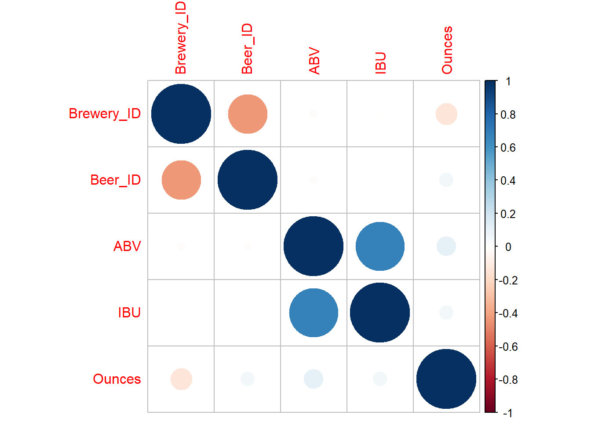
#visualizing strongest relationship between IBU and categorical values
plot_ly(ibu_known, x= ~reorder(Style,IBU), y= ~IBU) %>%
add_boxplot() %>%
layout(title="IBU by Beer Style")#visual comparison with ABV and Style (same order as IBU-relationship)
plot_ly(ibu_known, x= ~reorder(Style,IBU), y= ~ABV) %>%
add_boxplot() %>%
layout(title="ABV by Beer Style\nordered by increasing IBU")###############################################################
# Training nB for classifying IBU
model <- naiveBayes(IBU~., data=ibu_known)
######### external cross validation ###########################
### multiple iterations
iterations = 100
masterAcc = matrix(nrow = iterations)
for(j in 1:iterations){
train <- ibu_known[sample(seq(1:length(ibu_known$IBU)),
round(.7*length(ibu_known$IBU))),]
test <- ibu_known[-sample(seq(1:length(ibu_known$IBU)),
round(.7*length(ibu_known$IBU))),]
pred <- predict(model, train)
t1 <- table(factor(pred, union(pred, train$IBU)),
factor(train$IBU, union(pred, train$IBU)))
CM <- confusionMatrix(t1)
masterAcc[j] = CM$overall[1]
}
colMeans(masterAcc) # average accuracy across the 150 iterations## [1] 0.8429705var(masterAcc)[1] # measure of the variance across the 150 iterations## [1] 3.697411e-05# CM
# Impute nB
imp <- predict(model, ibu_unknown)
ibu_unknown_nB <- ibu_unknown
for(i in 1:nrow(ibu_unknown_nB)){
ibu_unknown_nB$IBU[i] <- imp[i]
}
# attaching the predictions for unknown to known IBUs
combined_df_nB <- rbind(ibu_known,ibu_unknown_nB)
combined_df_nB <- combined_df_nB[order(combined_df_nB$Brewery_ID),]
head(combined_df_nB, n = 5)## Brewery_ID Brewery_Name City State Region Beer_Name Beer_ID ABV IBU Style Ounces
## 1 1 NorthGate Brewing Minneapolis MN North Central Pumpion 2689 0.060 38 Pumpkin Ale 16
## 2 1 NorthGate Brewing Minneapolis MN North Central Stronghold 2688 0.060 25 American Porter 16
## 3 1 NorthGate Brewing Minneapolis MN North Central Parapet ESB 2687 0.056 47 Extra Special / Strong Bitter (ESB) 16
## 4 1 NorthGate Brewing Minneapolis MN North Central Get Together 2692 0.045 50 American IPA 16
## 5 1 NorthGate Brewing Minneapolis MN North Central Maggie's Leap 2691 0.049 26 Milk / Sweet Stout 16sapply(combined_df_nB,function(x) sum(is.na(x)))## Brewery_ID Brewery_Name City State Region Beer_Name Beer_ID ABV IBU Style Ounces
## 0 0 0 0 0 0 0 0 0 0 0BrewBeerABV = data.frame(combined_df_nB %>% group_by(State, Region) %>% summarise(ABV=median(ABV)))
BrewBeerABV %>% ggplot(mapping=aes(x=State,y=ABV,fill=State)) + geom_bar(stat="identity",width=0.3,position="dodge") +
theme(legend.position="none",axis.text.x=element_text(angle=45,vjust=0.1))+
ggtitle("Median ABV by State") + ylab("Median ABV") + xlab("State") + facet_wrap(~Region, scale = "free")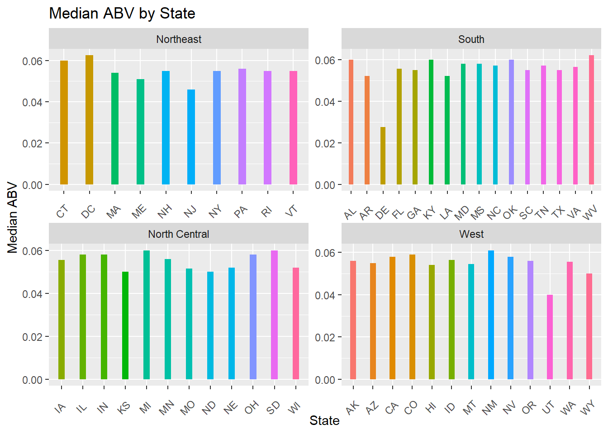
BrewBeerIBU = data.frame(combined_df_nB %>% group_by(State, Region) %>% summarise(IBU=median(IBU)))
BrewBeerIBU %>% ggplot(mapping=aes(x=State,y=IBU,fill=State)) + geom_bar(stat="identity",width=0.3,position="dodge") +
theme(legend.position="none",axis.text.x=element_text(angle=45,vjust=0.1))+
ggtitle("Median IBU by State") + ylab("Median IBU") + xlab("State") + facet_wrap(~Region, scale = "free")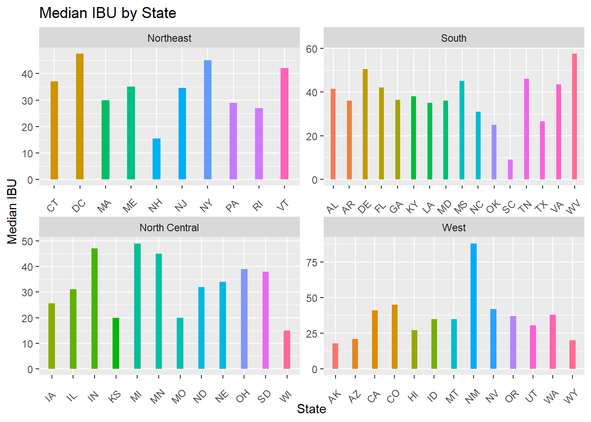
combined_df_nB[which.max(combined_df_nB$ABV),]## Brewery_ID Brewery_Name City State Region Beer_Name Beer_ID ABV IBU Style Ounces
## 384 52 Upslope Brewing Company Boulder CO West Lee Hill Series Vol. 5 - Belgian Style Quadrupel Ale 2565 0.128 48 Quadrupel (Quad) 19.2#Colorado at 12.8%
combined_df_nB[which.max(combined_df_nB$IBU),]## Brewery_ID Brewery_Name City State Region Beer_Name Beer_ID ABV IBU Style Ounces
## 1857 375 Astoria Brewing Company Astoria OR West Bitter Bitch Imperial IPA 980 0.082 138 American Double / Imperial IPA 12#Oregon at 138The state with the ABV is Colorado with a value of 0.128. And the state with the highest IBU is Oregon with an ABV of 138. Neither of these values came from the imputed data (i.e. they were not previously NA values).
################## BY STATE #########################
# IBU
quantile(BrewBeerIBU$IBU)## 0% 25% 50% 75% 100%
## 9 28 36 42 88####### quick scatterplot ##########################
ggplot(data = combined_df_nB) +
geom_point(mapping = aes(x = ABV, y = IBU), color = "blue")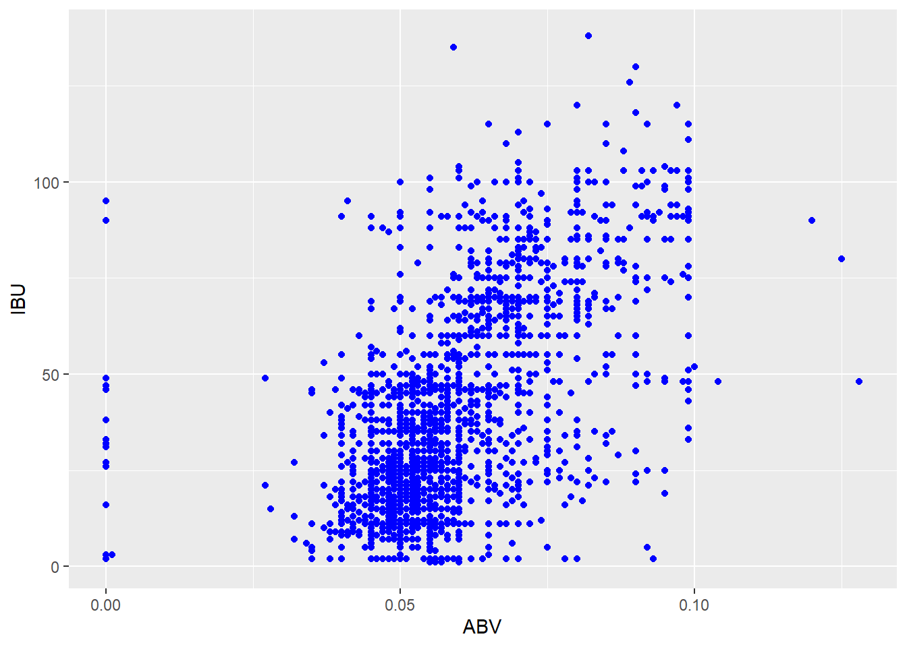
# linear model fit
lm_fit = lm(ABV ~ IBU, data = combined_df_nB)
combined_df_nB %>% ggplot(aes(x=ABV,y=IBU,color=State)) +
geom_point() +
ggtitle("ABV vs IBU by State") +
theme(legend.position = "none") +
theme(legend.title = element_blank()) +
geom_smooth(method="lm",se=FALSE,color="black",size=0.1)## `geom_smooth()` using formula 'y ~ x'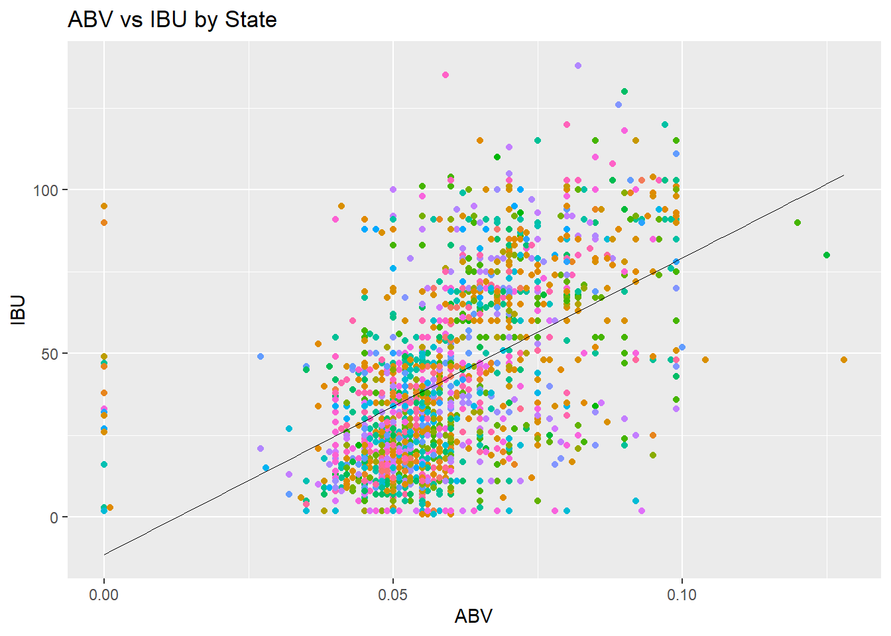
####### relationship between ABV and IBU ####################
combined_df_nB %>% ggplot(aes(x=ABV, y=IBU, color=ABV)) +
geom_point() +
geom_smooth() +
labs(color="Ratio of ABV vs IBU") +
ggtitle("ABV vs IBU")## `geom_smooth()` using method = 'gam' and formula 'y ~ s(x, bs = "cs")'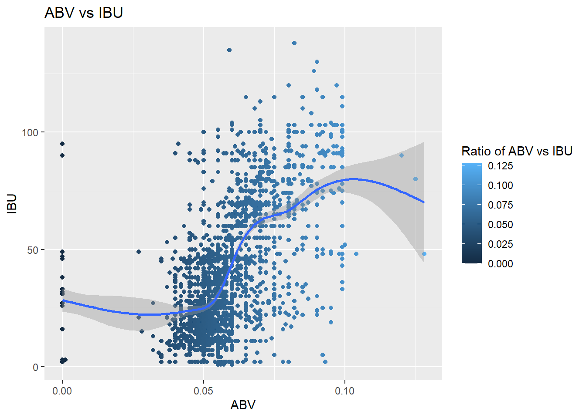
########### ABV and IBU relationship by ALE / IPA #################
#check to be sure we aren't missing anything by looking for IPA
#check for 'India Pale Ale' instead of 'IPA'
sum(grepl("India Pale Ale",combined_df_nB$Style)) - sum(grepl("India Pale Ale",combined_df_nB$Style) & grepl("IPA", combined_df_nB$Style))## [1] 0#isolate IPAs & non-IPA Ales / note beer-style as iapsType
ipas = filter(combined_df_nB, grepl("Ale|IPA",Style))
ipas = ipas %>% mutate(ipasType = ifelse(grepl("IPA",Style),"IPA","Ale"))
ipas %>% ggplot(aes(x=ABV *100, y= IBU, color=ipasType)) +
geom_point(position='jitter') +
geom_smooth() +
ggtitle('ABV vs IBU') +
labs(subtitle="Ale and IPAs")+
xlab('ABV (%)') +
theme(legend.title=element_blank())## `geom_smooth()` using method = 'loess' and formula 'y ~ x'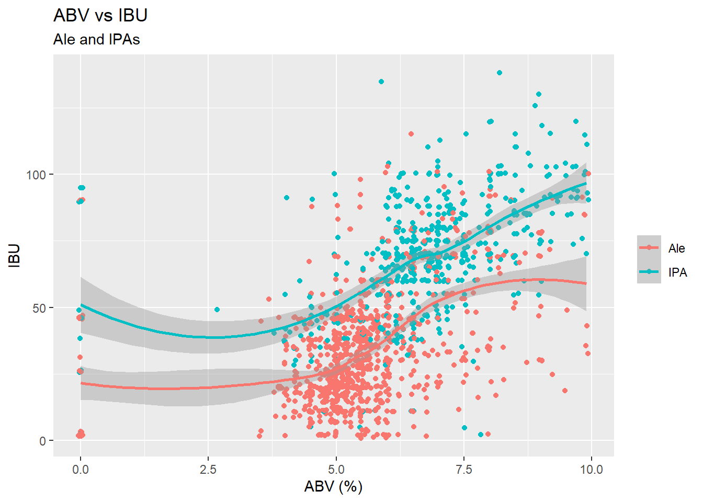
quantile(combined_df_nB$IBU)## 0% 25% 50% 75% 100%
## 1 20 35 65 138We can see that there is a positive correlation between IBU and ABV. We can see a big cluster around 5% ABV, and we predict that these are regular 12 ounces of beers which, according to NIAAA in the U.S., contain between 4-7% ABV, with the average being 5%. Anything above estimates to be malt liquor which averages to be 7% ABV. It is worth noting that correlation does not equal causation. Next, we decided to compare ABV and IBU by Ale and IPA. We can see that the majority of Ales have low ABV and IBU while the majority of IPAs have high ABV and IBU. Budweiser has average 5% ABV and 7 IBU; therefore, we may carefully suggest focusing on products with ABVs within range of 5.6 to 5.8% and IBUs of 19 to 64. This range might be more competitive in the existing market.
################################################################################
ipas = filter(combined_df_nB, grepl("Ale|IPA",Style))
ipas = ipas %>% mutate(ipasType = ifelse(grepl("IPA",Style),"IPA","Ale"))
set.seed(7)
splitPerc = 0.7
trainIndices = sample(1:dim(ipas)[1],round(splitPerc*dim(ipas)[1]))
train = ipas[trainIndices,]
test = ipas[-trainIndices,]
classifications = knn(train[,c(8,9)],test[,c(8,9)],as.factor(train$ipasType),prob=TRUE,k=5)
# str(train)
set.seed(7)
splitPerc = 0.7
iterations = 100
nums = 100
masterAcc = matrix(nrow = iterations, ncol = nums)
for (j in 1:iterations)
{
accs = data.frame(accuracy = numeric(100), k=numeric(100))
trainIndices = sample(1:dim(ipas)[1],round(splitPerc*dim(ipas)[1]))
train = ipas[trainIndices,]
test = ipas[-trainIndices,]
for (i in 1:nums)
{
classifications = knn(train[,c(8,9)],test[,c(8,9)],as.factor(train$ipasType),prob=TRUE,k=i)
CM = confusionMatrix(table(as.factor(test$ipasType),classifications))
masterAcc[j,i] = CM$overall[1]
}
}
CM## Confusion Matrix and Statistics
##
## classifications
## Ale IPA
## Ale 246 40
## IPA 36 138
##
## Accuracy : 0.8348
## 95% CI : (0.7976, 0.8676)
## No Information Rate : 0.613
## P-Value [Acc > NIR] : <2e-16
##
## Kappa : 0.6503
##
## Mcnemar's Test P-Value : 0.7308
##
## Sensitivity : 0.8723
## Specificity : 0.7753
## Pos Pred Value : 0.8601
## Neg Pred Value : 0.7931
## Prevalence : 0.6130
## Detection Rate : 0.5348
## Detection Prevalence : 0.6217
## Balanced Accuracy : 0.8238
##
## 'Positive' Class : Ale
## ## masterAcc # removed from knit
meanAcc=colMeans(masterAcc)
# plot k-values v. average accuracy
{plot(seq(1,nums,1), meanAcc,type="l", xlab = "Values for K",
ylab = "Average Accuracy")
abline(v=which.max(meanAcc),col="red",lwd=1)
abline(h=max(meanAcc),col="red",lwd=1)}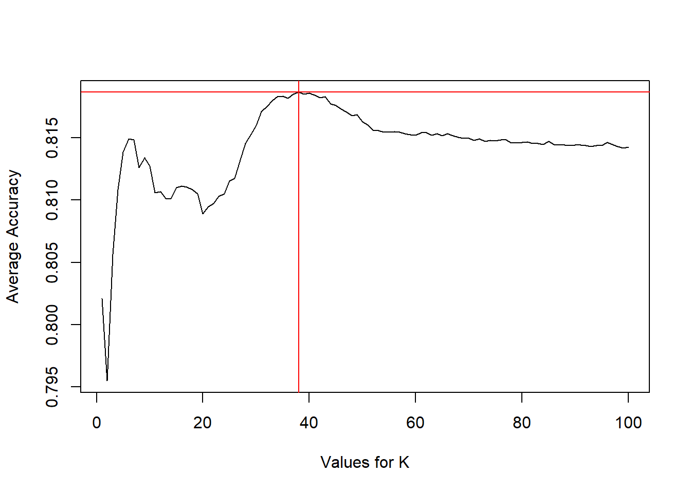
# best values for K and highest accuracy
## which.max(meanAcc) # 38 is best value for K
## max(meanAcc) # 81.8% is highest accuracy
# internal cross validation for knn
classifications = knn.cv(ipas[,c(8,9)], ipas$ipasType, prob = TRUE, k = 38)
CM <- confusionMatrix(table(classifications, as.factor(ipas$ipasType)))
CM## Confusion Matrix and Statistics
##
##
## classifications Ale IPA
## Ale 822 140
## IPA 141 431
##
## Accuracy : 0.8168
## 95% CI : (0.7965, 0.8359)
## No Information Rate : 0.6278
## P-Value [Acc > NIR] : <2e-16
##
## Kappa : 0.6082
##
## Mcnemar's Test P-Value : 1
##
## Sensitivity : 0.8536
## Specificity : 0.7548
## Pos Pred Value : 0.8545
## Neg Pred Value : 0.7535
## Prevalence : 0.6278
## Detection Rate : 0.5359
## Detection Prevalence : 0.6271
## Balanced Accuracy : 0.8042
##
## 'Positive' Class : Ale
## # Accuracy = 81.8%
# Sensitivity = 85.4%
# Specificity = 75.7%From external cross-validations, the optimal number of nearest neighbors is 38. From this, we checked our accuracy, sensitivity, and specificity of predicting IPA versus non-IPA ales. The accuracy for predicting IPA with internal cross-validation based on ABV and IBU was found to be 81.68%, the specificity was 75.48%, and the sensitivity was 85.36%.
## table(combined_df_nB$Style) #checking list of styles
sum(ifelse(combined_df_nB$Style=="",1,0)) #finding the unidentified styles## [1] 5style_byState <- combined_df_nB %>% select(Style, ABV, IBU, State, Region)
#replacing empty strings with 'unknown'
style_byState$Style <- replace(style_byState$Style,
which(style_byState==""),
"Unknown")
## table(style_byState$Style) #checking update
#creating the dataframe for State-preferences
style_byState %>% group_by(State) %>%
summarize(Style = names(which.max(table(Style))),
ABV = mean(ABV), #could switch to median if needed
IBU = mean(IBU))## # A tibble: 51 x 4
## State Style ABV IBU
## <chr> <chr> <dbl> <dbl>
## 1 AK American IPA 0.0556 34.4
## 2 AL American IPA 0.062 50.1
## 3 AR American Amber / Red Ale 0.052 25
## 4 AZ American IPA 0.0564 37.8
## 5 CA American IPA 0.0607 44.8
## 6 CO American IPA 0.0598 47.0
## 7 CT American Amber / Red Ale 0.0611 42.0
## 8 DC American Blonde Ale 0.0656 54.9
## 9 DE American IPA 0.0275 50.5
## 10 FL American IPA 0.0579 41.4
## # ... with 41 more rows#creating the summary for grpahing
summary_byState <- style_byState %>%
group_by(State) %>%
summarize(Style = names(which.max(table(Style))),
ABV = median(ABV),
IBU = median(IBU))
summary_byState <- summary_byState %>% dplyr::rename(state=State)
beer_colors <- c("#FFCCFF", "#CC6633", "#993300",
"#330000", "#FFCC66", "#663300",
"#006699", "#3399FF", "#99CCFF",
"#660066", "#66FF00", "#006600")
plot_usmap(regions="states",
data=summary_byState,
values="Style",labels=F,offset=0.5, color="white") +
theme(legend.position="bottom",
legend.title=element_blank()) +
labs(title = "Preferred Beer Style\nby State") +
scale_fill_manual(values=beer_colors)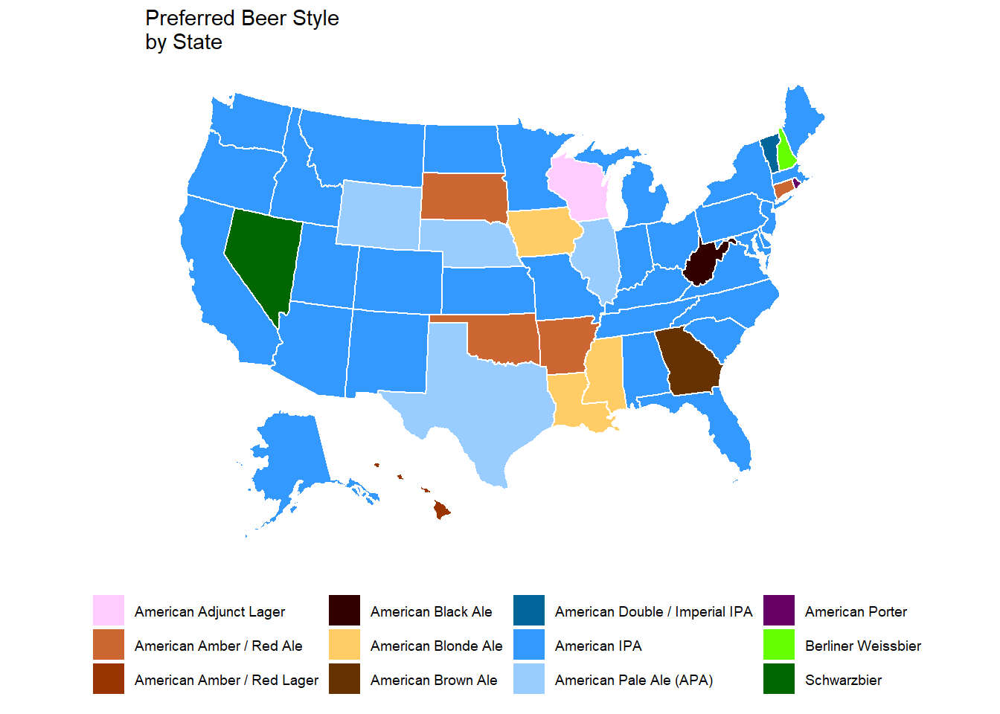
The graphic here depicts majority preference by state for certain styles of beers. When ties occurred, we gave the win to the most prevalent beer-type nationally. The focus of our analysis here was to present a by-state retail option. With additional supply-chain information, we may be able to help optimize future distribution or optimization efforts.
6. Comment on the summary statistics and distribution of the ABV variable.
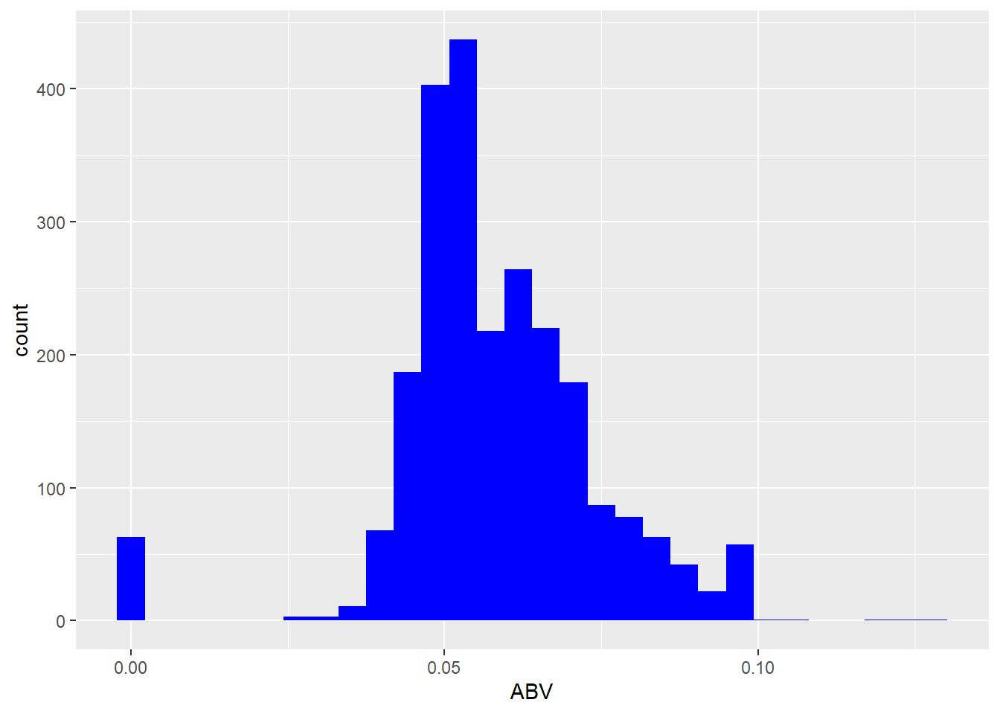
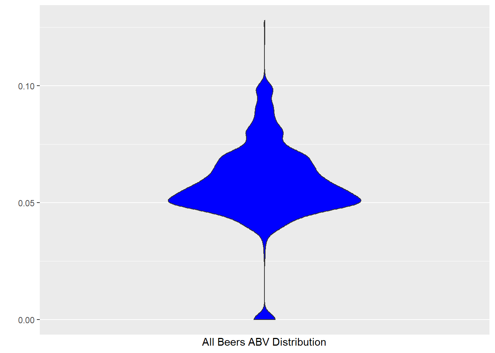
The ABV variable had 62 imputed zeros. The error rate for this is 2.57%. Additionally, 75% of the ABV falls between 5% - 6.7%. A general note of interest is that Budweiser has an ABV of 5%.